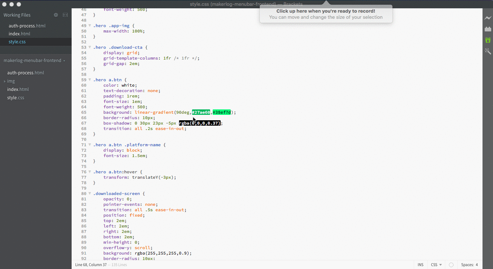
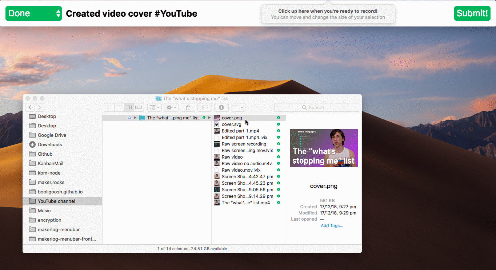
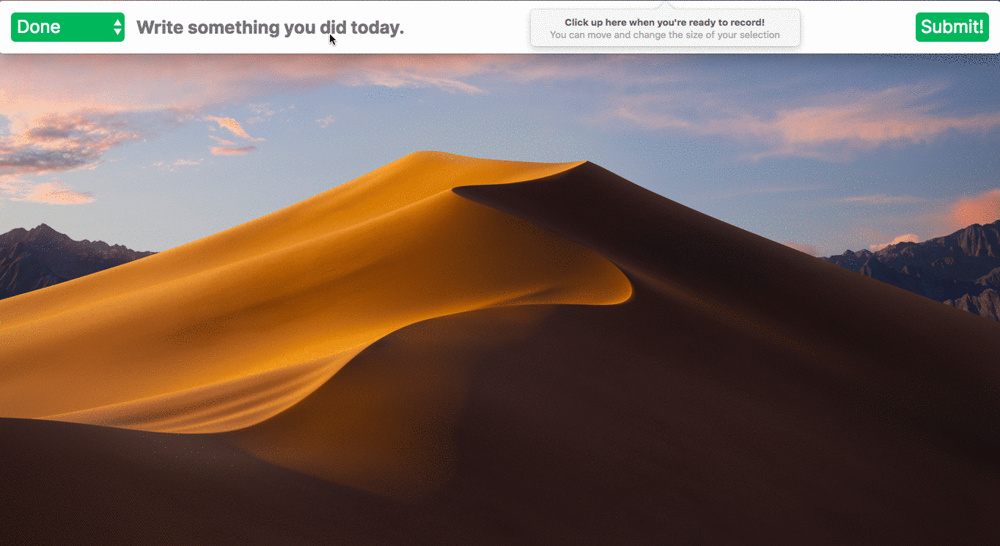

Thank you!!
Your download will begin shortly :)
In the meantime, let's get to know your shiny new app! ✨
(bookmark me for future reference)
Log from anywhere
Just type Shift ⌘ M from anywhere on your computer to show/hide Makerlog Menubar! It’ll give you a huge productivity boost 🔥
Attach images
Simply drag any image straight onto the Makerlog Menubar app to attach it to your log! 📎
Dark mode
Makerlog Menubar will automatically change between light and dark mode based on your operating system's settings! 🌓

Hashtag autocomplete
Makerlog Menubar suggests hashtags for you! When a suggestion appears, just press the right arrow key to accept it. If there are multiple matching hashtags, it calculates the most relevant one based on your previous hashtag usage.
